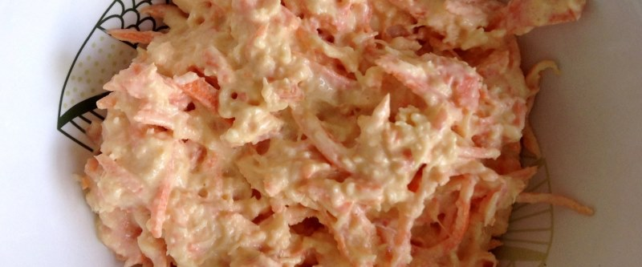

Горлодер

- морковь — 2 шт
- твёрдый сыр — 100 г
- чеснок — 2 зубчика
- майонез
2 морковки натереть на самой мелкой терке. На той же терке натереть 100 гр. твердого сыра. Соединить два ингридиента месте.
Выдавить в массу 2 зубчика чеснока и заправить майонезом.
 Назад к списку рецептов
Назад к списку рецептов